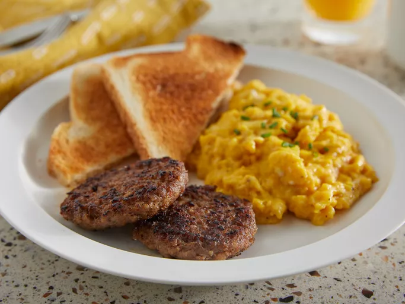
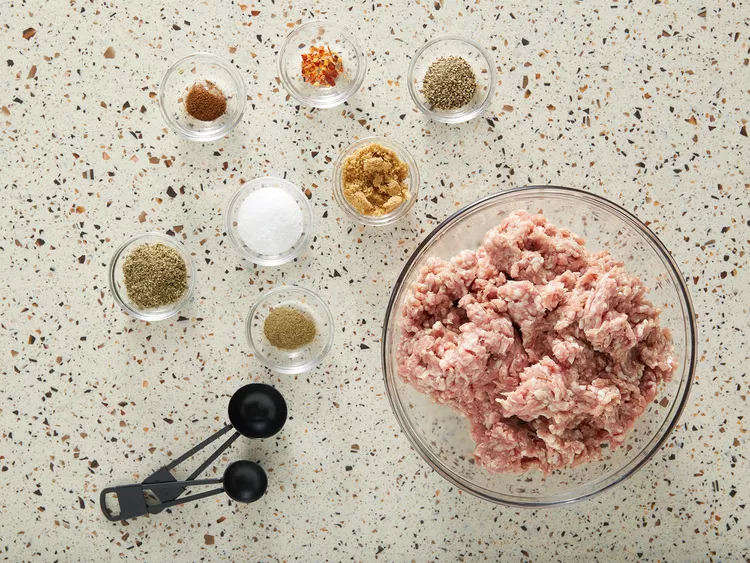
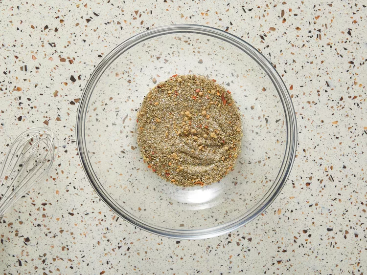
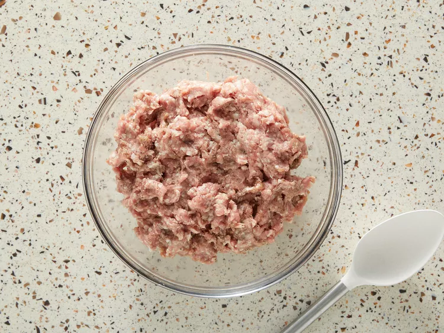
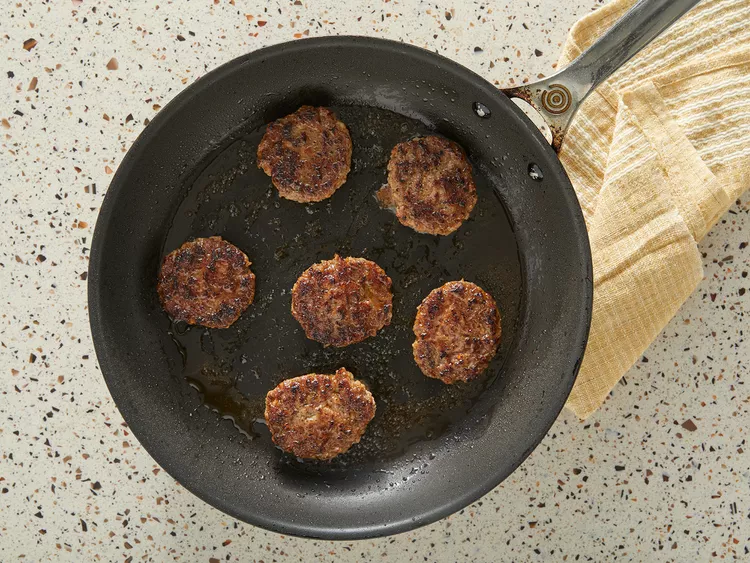

Homemade Breakfast Sausage

Description
Homemade breakfast sausage patties made with ground pork, brown sugar, and sage
deliver sweet and savory flavor in every bite. These are better than store-bought since you
can flavor them as you like! Serve a patty alongside scrambled eggs and hash brown
potatoes or layer one with a fried egg and a slice of cheese to make a tasty breakfast sandwich.
Ingredients
- 1 tablespoon brown sugar
- 2 teaspoons dried sage
- 2 teaspoons salt
- 1 teaspoon ground black pepper
- ¼ teaspoon dried marjoram
- ⅛ teaspoon crushed red pepper flakes
- 1 pinch ground cloves
- 2 pounds ground pork
Steps
Step 1
- Gather all ingredients.

Step 2
- Mix together brown sugar, sage, salt, black pepper, marjoram, red pepper flakes,
and cloves in a small bowl until well combined.

Step 3
- Place pork in a large bowl. Add spice mixture and mix with your hands until well
combined. Form mixture into 6 patties.

Step 4
- Heat a large skillet over medium-high heat. Add patties and saute until browned
and crispy, about 5 minutes per side. An instant-read thermometer inserted into
the center should read at least 160 degrees F (71 degrees C).

Step 5
- Serve hot and enjoy!
.webp)
To Homepage